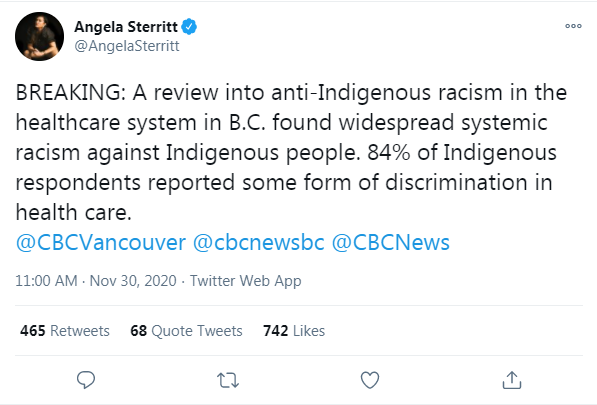
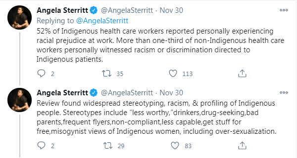
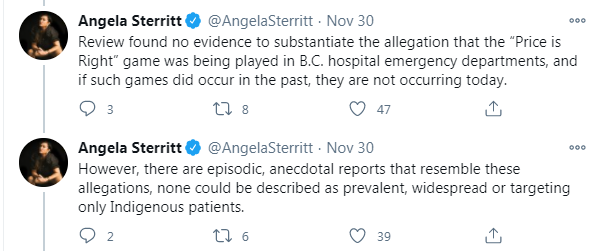
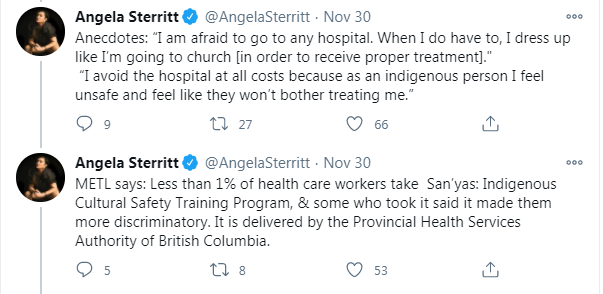
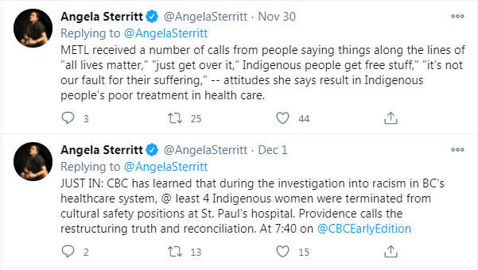
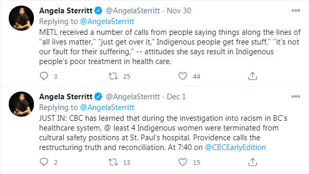
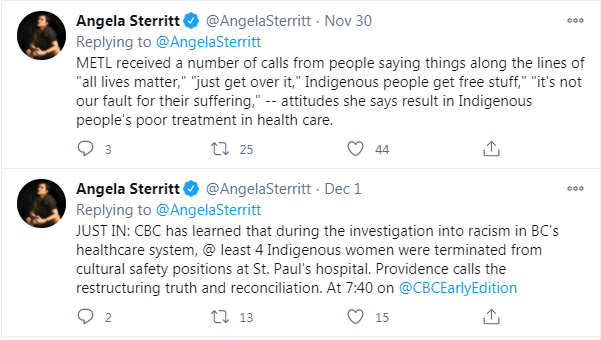

Hilariously Anti-White "Indigenous Health Care Report"
December 11th, 2020

So lately I've been noticing this coordinated push by the Mouthpieces of the Privileged and Powerful, also known as Globo Homo Schlomo, to push this whole "Abos are getting the long dick of White Supremacy at the local hospital." I've written a few articles on this phenomenon, such as this one, wherein a bunch of Abos whine about their supposed hospital mistreatment, and this, less related one, doing the same for the Pension Seekers in Blue. The above is a tweet from November 30th, and it was part of a long awaited BC report on "widespread systemic racism against Indigenous People."

You'll notice a common anti-White assumption in all of this. Namely, that the opinions of brown people are somehow sancrosanct, and can be taken at face value. Now, it feels silly to even have to say this, but a bunch of brown people whining about something does not magic that thing into existence.

Let me translate that from Anti-Whitism to English for you, goy.
TDC_ARTICLE_START
Review found that Abos made up laughably fake slanders against White Workers.
TDC_ARTICLE_STOP
That's what it would have said, if these people weren't just Anti-Whites trying to push their masters agenda, because that's what this report actually found. Again, I feel a little silly even explaining this, I'm sure you get it, goy.
The tweet thread goes on about how blah blah "racism persists," blah blah "accountability," blah blah "anectodal story about Abo 'afraid' to go to hospital, yet goes anyway." I mean these are so ridiculous I think I have to screenshot a few more.

"I'm so afraid to go to this hospital, but I'm going anyway because I love the White Man's healthcare that my terrible 70 IQ people could have never created ourselves." Yeah, anon felt unsafe until it dressed up like a church-goer.
 And you did read that second tweet correctly. The "Cultural Saftey Training Program," made people more discriminatory. That shouldn't surprise anyone, in your face Anti-Whitism makes White People far more Race-Aware. This is actually what I've been saying for a long time. Our best propaganda is our enemies propaganda.
Having said that, those stereotypes are pretty much on the money, so for all we know this is 100% legit.
And you did read that second tweet correctly. The "Cultural Saftey Training Program," made people more discriminatory. That shouldn't surprise anyone, in your face Anti-Whitism makes White People far more Race-Aware. This is actually what I've been saying for a long time. Our best propaganda is our enemies propaganda.
Having said that, those stereotypes are pretty much on the money, so for all we know this is 100% legit.
 
...and it turns out that I'm going to have to write another article on this, since the petition she links to here is pretty interesting.
And no, I don't know who METL is, will find out.

...and it turns out that I'm going to have to write another article on this, since the petition she links to here is pretty interesting.
And no, I don't know who METL is, will find out.
And you did read that second tweet correctly. The "Cultural Saftey Training Program," made people more discriminatory. That shouldn't surprise anyone, in your face Anti-Whitism makes White People far more Race-Aware. This is actually what I've been saying for a long time. Our best propaganda is our enemies propaganda.
Having said that, those stereotypes are pretty much on the money, so for all we know this is 100% legit.

...and it turns out that I'm going to have to write another article on this, since the petition she links to here is pretty interesting.
And no, I don't know who METL is, will find out.